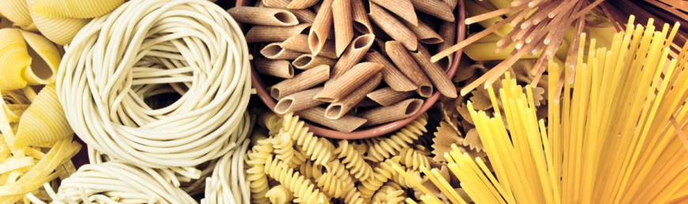

How to Make a Simple Spaghetti Dinner
Gathering Ingredients
In order to cook the meal, first you'll need the following ingredients:
| Ingredient | Amount |
|---|---|
| Spaghetti | 1 Box |
| Prego Chunky Garden Tomato Sauce | 1 Jar, Medium |
| Can of Crushed Tomatoes | 1 Can, Medium |
| White Onion | 1/2, Large |
| Mushrooms | 2-3, Large |
| Red Pepper Flakes and Dried Basil | To Taste |
| Salt & Pepper | To Taste |
Cooking the Pasta
After obtaining all the ingridients, now you can actually cook the pasta.
In order to cook the spaghetti, fill a fairly large pot with water. There is no such thing as too much water to put into the pot. Too little water, however could cause the raw pasta to burn triggering a possible housefire and very angry roommates. After filling up the pot, place it on a stove burner and set the temperature to 'high.' It will take the water about 8-10 minutes to boil depending on how great your stove top is.
At this point, you may start cooking your sauce since the water will take a hot second before boiling. (See Sauce)
Once the water is boiling, take about half of the spaghetti out of the box and place it into the boiling water. After placing the spaghetti into the pot, lower the heat from 'high' to 'medium,' and periodically stir the pasta to ensure even cooking. At this point, you should also put a couple of pinches of salt into the pot. My grandmother told me that the water needs to be salty like the ocean. If you notice the water begin to boil over at any point that the pasta is in the pot, lower the heat. Also stir the pot every so often so that the pasta doesn't stick to the bottom of the pan
After about 5 minutes, get a fork and take a piece of spaghetti out of the pot to taste. If it is crunchy, then allow the pasta to continue cooking for another couple of minutes before taste testing again. If the pasta is soft, or seems firm (aldente), then turn the heat off and take the pot off the stove. Then dump the pasta into a strainer, and rinse with cold water. Rinsing with cold water makes the pasta not stick.
Making the Sauce
This part of the tutorial is crucial because a bad sauce makes a bad meal.
Chop the white onion and mushrooms and place into a nonstick pan on a hot stovetop with a little bit of olive oil. Stir around the vegetables until they are soft. While cooking the onions and mushrooms, get a semi large pot and pour the sauce and tomatoes from the can into it. Place the pot on a hot stovetop and let simmer. Stir periodically so that the sauce does not burn. Once the sauce is boiling, turn the heat down and add the cooked mushrooms and onions. After about 5 minutes, put seasonings (pepper, red pepper flakes, and dried basil) into the sauce pot and stir.
Taste the sauce to determine if it is cooked and seasoned to preference. If the sauce seems too watery, put about half a teaspoon of flour into it, to help thicken it up. Also, don't worry if the spaghetti isn't as hot once the sauce is done. The sauce will be hot enough to provide heat to the overall dish.
Once your meal is complete, do not store leftovers in fridge right away. The sauce will become sour if it is placed in the fridge hot. Instead, leave the sauce out to cool in the storage container of choice until it is about room temperature.